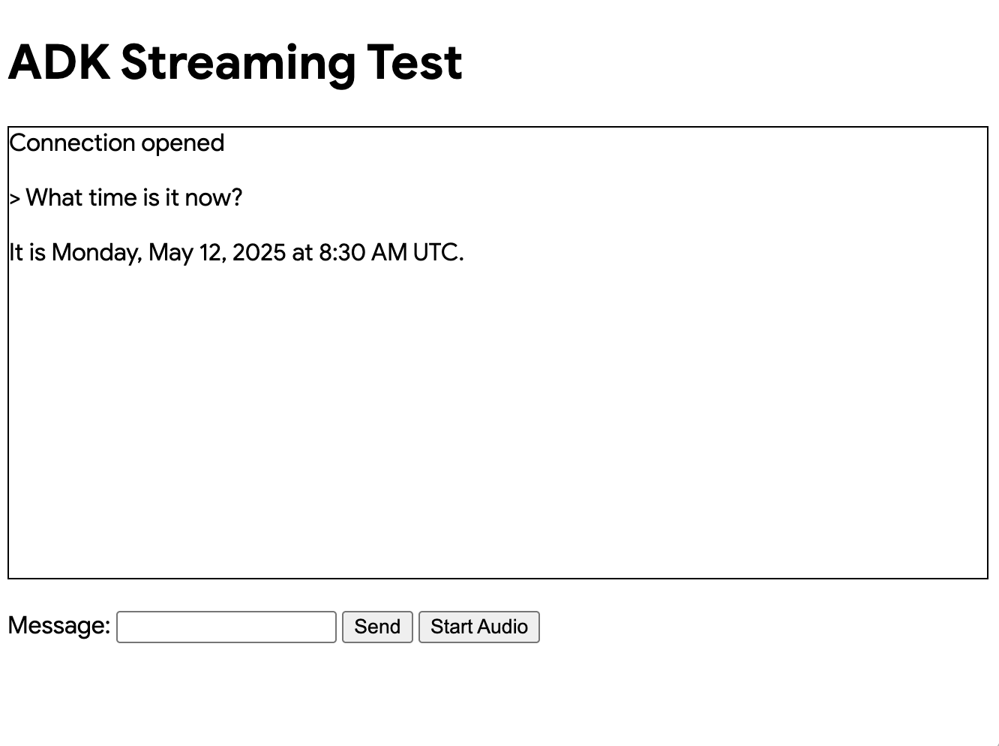

사용자 정의 오디오 스트리밍 앱 (WebSocket)¶
이 글은 ADK 스트리밍과 FastAPI로 구축된 사용자 정의 비동기 웹 앱의 서버 및 클라이언트 코드를 개괄적으로 설명하며, WebSocket을 통한 실시간 양방향 오디오 및 텍스트 통신을 가능하게 합니다.
참고: 이 가이드는 JavaScript 및 Python asyncio 프로그래밍 경험이 있다고 가정합니다.
음성/영상 스트리밍 지원 모델¶
ADK에서 음성/영상 스트리밍을 사용하려면 Live API를 지원하는 Gemini 모델을 사용해야 합니다. 문서에서 Gemini Live API를 지원하는 모델 ID를 찾을 수 있습니다:
해당 샘플은 SSE 버전으로도 확인하실 수 있습니다.
1. ADK 설치¶
가상 환경 생성 및 활성화 (권장):
# 생성
python -m venv .venv
# 활성화 (새 터미널마다)
# macOS/Linux: source .venv/bin/activate
# Windows CMD: .venv\Scripts\activate.bat
# Windows PowerShell: .venv\Scripts\Activate.ps1
ADK 설치:
다음 명령어로 SSL_CERT_FILE 변수 설정:
샘플 코드 다운로드:
git clone --no-checkout https://github.com/google/adk-docs.git
cd adk-docs
git sparse-checkout init --cone
git sparse-checkout set examples/python/snippets/streaming/adk-streaming-ws
git checkout main
cd examples/python/snippets/streaming/adk-streaming-ws/app
이 샘플 코드에는 다음과 같은 파일과 폴더가 있습니다:
adk-streaming-ws/
└── app/ # 웹 앱 폴더
├── .env # Gemini API 키 / Google Cloud 프로젝트 ID
├── main.py # FastAPI 웹 앱
├── static/ # 정적 콘텐츠 폴더
| ├── js # JavaScript 파일 폴더 (app.js 포함)
| └── index.html # 웹 클라이언트 페이지
└── google_search_agent/ # 에이전트 폴더
├── __init__.py # Python 패키지
└── agent.py # 에이전트 정의
2. 플랫폼 설정¶
샘플 앱을 실행하려면 Google AI Studio 또는 Google Cloud Vertex AI 중에서 플랫폼을 선택하세요:
- Google AI Studio에서 API 키를 받으세요.
-
(
app/안에 있는).env파일을 열고 다음 코드를 복사하여 붙여넣습니다. -
PASTE_YOUR_ACTUAL_API_KEY_HERE를 실제API 키로 교체하세요.
- 기존 Google Cloud 계정과 프로젝트가 필요합니다.
- Google Cloud 프로젝트 설정
- gcloud CLI 설정
- 터미널에서
gcloud auth login을 실행하여 Google Cloud에 인증하세요. - Vertex AI API 활성화.
-
(
app/안에 있는).env파일을 엽니다. 다음 코드를 복사하여 붙여넣고 프로젝트 ID와 위치를 업데이트하세요.
agent.py¶
google_search_agent 폴더의 에이전트 정의 코드 agent.py는 에이전트의 로직이 작성되는 곳입니다:
from google.adk.agents import Agent
from google.adk.tools import google_search # 도구 가져오기
root_agent = Agent(
name="google_search_agent",
model="gemini-2.0-flash-exp", # 이 모델이 작동하지 않으면 아래 모델을 시도하세요
#model="gemini-2.0-flash-live-001",
description="Google 검색을 사용하여 질문에 답하는 에이전트.",
instruction="Google 검색 도구를 사용하여 질문에 답하세요.",
tools=[google_search],
)
참고: 텍스트와 오디오/비디오 입력을 모두 활성화하려면 모델이 generateContent (텍스트용) 및 bidiGenerateContent 메서드를 지원해야 합니다. 모델 목록 문서를 참조하여 이러한 기능을 확인하세요. 이 빠른 시작에서는 시연 목적으로 gemini-2.0-flash-exp 모델을 활용합니다.
Google 검색을 통한 그라운딩 기능이 얼마나 쉽게 통합되었는지 주목하세요. Agent 클래스와 google_search 도구는 LLM 및 검색 API와의 복잡한 상호작용을 처리하므로, 여러분은 에이전트의 목적과 행동에 집중할 수 있습니다.

3. 스트리밍 앱과 상호작용하기¶
- 올바른 디렉토리로 이동:
에이전트를 효과적으로 실행하려면 app 폴더 (adk-streaming-ws/app)에 있는지 확인하세요.
- FastAPI 시작: 다음 명령어를 실행하여 CLI 인터페이스 시작
- 텍스트 모드로 앱에 접속: 앱이 시작되면 터미널에 로컬 URL(예: http://localhost:8000)이 표시됩니다. 이 링크를 클릭하여 브라우저에서 UI를 엽니다.
이제 다음과 같은 UI가 표시됩니다:

지금 몇 시야?와 같은 질문을 해보세요. 에이전트는 Google 검색을 사용하여 쿼리에 응답합니다. UI에 에이전트의 응답이 스트리밍 텍스트로 표시되는 것을 알 수 있습니다. 또한 에이전트가 아직 응답 중일 때도 언제든지 메시지를 보낼 수 있습니다. 이는 ADK 스트리밍의 양방향 통신 기능을 보여줍니다.
- 오디오 모드로 앱에 접속: 이제
오디오 시작버튼을 클릭합니다. 앱이 오디오 모드로 서버와 다시 연결되고, UI에 처음으로 다음과 같은 대화 상자가 표시됩니다:

사이트 방문 중 허용을 클릭하면 브라우저 상단에 마이크 아이콘이 표시됩니다:

이제 음성으로 에이전트와 대화할 수 있습니다. 지금 몇 시야?와 같은 질문을 음성으로 하면 에이전트도 음성으로 응답하는 것을 들을 수 있습니다. ADK용 스트리밍은 다양한 언어를 지원하므로 지원되는 언어로 된 질문에도 응답할 수 있습니다.
- 콘솔 로그 확인
Chrome 브라우저를 사용하는 경우 마우스 오른쪽 버튼을 클릭하고 검사를 선택하여 개발자 도구를 엽니다. 콘솔에서 브라우저와 서버 간에 스트리밍되는 오디오 데이터를 나타내는 [클라이언트에서 에이전트로] 및 [에이전트에서 클라이언트로]와 같은 들어오고 나가는 오디오 데이터를 볼 수 있습니다.
동시에 앱 서버 콘솔에는 다음과 같은 내용이 표시됩니다:
INFO: ('127.0.0.1', 50068) - "WebSocket /ws/70070018?is_audio=true" [accepted]
클라이언트 #70070018 연결됨, 오디오 모드: true
INFO: 연결 열림
INFO: 127.0.0.1:50061 - "GET /static/js/pcm-player-processor.js HTTP/1.1" 200 OK
INFO: 127.0.0.1:50060 - "GET /static/js/pcm-recorder-processor.js HTTP/1.1" 200 OK
[에이전트에서 클라이언트로]: audio/pcm: 9600 바이트.
INFO: 127.0.0.1:50082 - "GET /favicon.ico HTTP/1.1" 404 Not Found
[에이전트에서 클라이언트로]: audio/pcm: 11520 바이트.
[에이전트에서 클라이언트로]: audio/pcm: 11520 바이트.
이러한 콘솔 로그는 자신만의 스트리밍 애플리케이션을 개발할 경우 중요합니다. 많은 경우 브라우저와 서버 간의 통신 실패가 스트리밍 애플리케이션 버그의 주요 원인이 됩니다.
-
문제 해결 팁
-
ws://가 작동하지 않을 때: Chrome 개발자 도구에서ws://연결과 관련된 오류가 표시되면app/static/js/app.js28행에서ws://를wss://로 교체해 보세요. 이는 클라우드 환경에서 샘플을 실행하고 브라우저에서 프록시 연결을 사용하여 연결할 때 발생할 수 있습니다. gemini-2.0-flash-exp모델이 작동하지 않을 때: 앱 서버 콘솔에서gemini-2.0-flash-exp모델 가용성과 관련된 오류가 표시되면app/google_search_agent/agent.py6행에서gemini-2.0-flash-live-001로 교체해 보세요.
4. 서버 코드 개요¶
이 서버 앱은 WebSocket을 통해 ADK 에이전트와 실시간 스트리밍 상호 작용을 가능하게 합니다. 클라이언트는 텍스트/오디오를 ADK 에이전트로 보내고 스트리밍된 텍스트/오디오 응답을 받습니다.
핵심 기능: 1. ADK 에이전트 세션 초기화/관리. 2. 클라이언트 WebSocket 연결 처리. 3. 클라이언트 메시지를 ADK 에이전트로 전달. 4. ADK 에이전트 응답(텍스트/오디오)을 클라이언트로 스트리밍.
ADK 스트리밍 설정¶
import os
import json
import asyncio
import base64
from pathlib import Path
from dotenv import load_dotenv
from google.genai.types import (
Part,
Content,
Blob,
)
from google.adk.runners import Runner
from google.adk.agents import LiveRequestQueue
from google.adk.agents.run_config import RunConfig
from google.adk.sessions.in_memory_session_service import InMemorySessionService
from fastapi import FastAPI, WebSocket
from fastapi.staticfiles import StaticFiles
from fastapi.responses import FileResponse
from google_search_agent.agent import root_agent
- 가져오기: 표준 Python 라이브러리, 환경 변수용
dotenv, Google ADK 및 FastAPI를 포함합니다. load_dotenv(): 환경 변수를 로드합니다.APP_NAME: ADK용 애플리케이션 식별자입니다.session_service = InMemorySessionService(): 단일 인스턴스 또는 개발용으로 적합한 인메모리 ADK 세션 서비스를 초기화합니다. 프로덕션 환경에서는 영구 저장소를 사용할 수 있습니다.
start_agent_session(session_id, is_audio=False)¶
async def start_agent_session(user_id, is_audio=False):
"""에이전트 세션을 시작합니다"""
# Runner 생성
runner = InMemoryRunner(
app_name=APP_NAME,
agent=root_agent,
)
# 세션 생성
session = await runner.session_service.create_session(
app_name=APP_NAME,
user_id=user_id, # 실제 사용자 ID로 교체
)
# 응답 양식 설정
modality = "AUDIO" if is_audio else "TEXT"
run_config = RunConfig(response_modalities=[modality])
# 이 세션에 대한 LiveRequestQueue 생성
live_request_queue = LiveRequestQueue()
# 에이전트 세션 시작
live_events = runner.run_live(
session=session,
live_request_queue=live_request_queue,
run_config=run_config,
)
return live_events, live_request_queue
이 함수는 ADK 에이전트 라이브 세션을 초기화합니다.
| 매개변수 | 유형 | 설명 |
|---|---|---|
user_id |
str |
고유한 클라이언트 식별자. |
is_audio |
bool |
True는 오디오 응답, False는 텍스트(기본값). |
주요 단계:
1. Runner 생성: root_agent에 대한 ADK 러너를 인스턴스화합니다.
2. 세션 생성: ADK 세션을 설정합니다.
3. 응답 양식 설정: 에이전트 응답을 "AUDIO" 또는 "TEXT"로 구성합니다.
4. LiveRequestQueue 생성: 에이전트에 대한 클라이언트 입력을 위한 큐를 생성합니다.
5. 에이전트 세션 시작: runner.run_live(...)는 에이전트를 시작하며 다음을 반환합니다:
* live_events: 에이전트 이벤트(텍스트, 오디오, 완료)에 대한 비동기 반복 가능 객체.
* live_request_queue: 에이전트에 데이터를 보내기 위한 큐.
반환: (live_events, live_request_queue).
agent_to_client_messaging(websocket, live_events)¶
async def agent_to_client_messaging(websocket, live_events):
"""에이전트에서 클라이언트로 통신"""
while True:
async for event in live_events:
# 턴이 완료되거나 중단되면 전송
if event.turn_complete or event.interrupted:
message = {
"turn_complete": event.turn_complete,
"interrupted": event.interrupted,
}
await websocket.send_text(json.dumps(message))
print(f"[에이전트에서 클라이언트로]: {message}")
continue
# 콘텐츠와 첫 번째 파트 읽기
part: Part = (
event.content and event.content.parts and event.content.parts[0]
)
if not part:
continue
# 오디오인 경우 Base64로 인코딩된 오디오 데이터 전송
is_audio = part.inline_data and part.inline_data.mime_type.startswith("audio/pcm")
if is_audio:
audio_data = part.inline_data and part.inline_data.data
if audio_data:
message = {
"mime_type": "audio/pcm",
"data": base64.b64encode(audio_data).decode("ascii")
}
await websocket.send_text(json.dumps(message))
print(f"[에이전트에서 클라이언트로]: audio/pcm: {len(audio_data)} 바이트.")
continue
# 텍스트이고 부분 텍스트인 경우 전송
if part.text and event.partial:
message = {
"mime_type": "text/plain",
"data": part.text
}
await websocket.send_text(json.dumps(message))
print(f"[에이전트에서 클라이언트로]: text/plain: {message}")
이 비동기 함수는 ADK 에이전트 이벤트를 WebSocket 클라이언트로 스트리밍합니다.
로직:
1. 에이전트의 live_events를 반복합니다.
2. 턴 완료/중단: 상태 플래그를 클라이언트로 보냅니다.
3. 콘텐츠 처리:
* 이벤트 콘텐츠에서 첫 번째 Part를 추출합니다.
* 오디오 데이터: 오디오(PCM)인 경우 Base64로 인코딩하여 JSON으로 보냅니다: { "mime_type": "audio/pcm", "data": "<base64_audio>" }.
* 텍스트 데이터: 부분 텍스트인 경우 JSON으로 보냅니다: { "mime_type": "text/plain", "data": "<partial_text>" }.
4. 메시지를 기록합니다.
client_to_agent_messaging(websocket, live_request_queue)¶
async def client_to_agent_messaging(websocket, live_request_queue):
"""클라이언트에서 에이전트로 통신"""
while True:
# JSON 메시지 디코딩
message_json = await websocket.receive_text()
message = json.loads(message_json)
mime_type = message["mime_type"]
data = message["data"]
# 에이전트로 메시지 전송
if mime_type == "text/plain":
# 텍스트 메시지 전송
content = Content(role="user", parts=[Part.from_text(text=data)])
live_request_queue.send_content(content=content)
print(f"[클라이언트에서 에이전트로]: {data}")
elif mime_type == "audio/pcm":
# 오디오 데이터 전송
decoded_data = base64.b64decode(data)
live_request_queue.send_realtime(Blob(data=decoded_data, mime_type=mime_type))
else:
raise ValueError(f"지원되지 않는 Mime 유형: {mime_type}")
이 비동기 함수는 WebSocket 클라이언트의 메시지를 ADK 에이전트로 전달합니다.
로직:
1. WebSocket에서 JSON 메시지를 수신하고 구문 분석합니다. 예상 형식: { "mime_type": "text/plain" | "audio/pcm", "data": "<data>" }.
2. 텍스트 입력: "text/plain"의 경우 live_request_queue.send_content()를 통해 Content를 에이전트로 보냅니다.
3. 오디오 입력: "audio/pcm"의 경우 Base64 데이터를 디코딩하고 Blob으로 래핑한 다음 live_request_queue.send_realtime()을 통해 보냅니다.
4. 지원되지 않는 MIME 유형에 대해 ValueError를 발생시킵니다.
5. 메시지를 기록합니다.
FastAPI 웹 애플리케이션¶
app = FastAPI()
STATIC_DIR = Path("static")
app.mount("/static", StaticFiles(directory=STATIC_DIR), name="static")
@app.get("/")
async def root():
"""index.html을 제공합니다"""
return FileResponse(os.path.join(STATIC_DIR, "index.html"))
@app.websocket("/ws/{user_id}")
async def websocket_endpoint(websocket: WebSocket, user_id: int, is_audio: str):
"""클라이언트 websocket 엔드포인트"""
# 클라이언트 연결 대기
await websocket.accept()
print(f"클라이언트 #{user_id} 연결됨, 오디오 모드: {is_audio}")
# 에이전트 세션 시작
user_id_str = str(user_id)
live_events, live_request_queue = await start_agent_session(user_id_str, is_audio == "true")
# 작업 시작
agent_to_client_task = asyncio.create_task(
agent_to_client_messaging(websocket, live_events)
)
client_to_agent_task = asyncio.create_task(
client_to_agent_messaging(websocket, live_request_queue)
)
# 웹소켓 연결이 끊어지거나 오류가 발생할 때까지 대기
tasks = [agent_to_client_task, client_to_agent_task]
await asyncio.wait(tasks, return_when=asyncio.FIRST_EXCEPTION)
# LiveRequestQueue 닫기
live_request_queue.close()
# 연결 끊김
print(f"클라이언트 #{user_id} 연결 끊김")
app = FastAPI(): 애플리케이션을 초기화합니다.- 정적 파일:
/static아래의static디렉토리에서 파일을 제공합니다. @app.get("/")(루트 엔드포인트):index.html을 제공합니다.@app.websocket("/ws/{user_id}")(WebSocket 엔드포인트):- 경로 매개변수:
user_id(int) 및is_audio(str: "true"/"false"). - 연결 처리:
- WebSocket 연결을 수락합니다.
user_id및is_audio를 사용하여start_agent_session()을 호출합니다.- 동시 메시징 작업:
asyncio.gather를 사용하여agent_to_client_messaging및client_to_agent_messaging을 동시에 생성하고 실행합니다. 이러한 작업은 양방향 메시지 흐름을 처리합니다. - 클라이언트 연결 및 연결 끊김을 기록합니다.
- 경로 매개변수:
작동 방식 (전체 흐름)¶
- 클라이언트가
ws://<server>/ws/<user_id>?is_audio=<true_or_false>에 연결합니다. - 서버의
websocket_endpoint가 수락하고 ADK 세션을 시작합니다(start_agent_session). - 두 개의
asyncio작업이 통신을 관리합니다:client_to_agent_messaging: 클라이언트 WebSocket 메시지 -> ADKlive_request_queue.agent_to_client_messaging: ADKlive_events-> 클라이언트 WebSocket.
- 연결이 끊어지거나 오류가 발생할 때까지 양방향 스트리밍이 계속됩니다.
5. 클라이언트 코드 개요¶
JavaScript app.js(app/static/js에 있음)는 ADK 스트리밍 WebSocket 백엔드와의 클라이언트 측 상호 작용을 관리합니다. 텍스트/오디오를 보내고 스트리밍된 응답을 수신/표시하는 것을 처리합니다.
주요 기능: 1. WebSocket 연결 관리. 2. 텍스트 입력 처리. 3. 마이크 오디오 캡처(Web Audio API, AudioWorklets). 4. 백엔드로 텍스트/오디오 전송. 5. 텍스트/오디오 에이전트 응답 수신 및 렌더링. 6. UI 관리.
전제 조건¶
- HTML 구조: 특정 요소 ID가 필요합니다(예:
messageForm,message,messages,sendButton,startAudioButton). - 백엔드 서버: Python FastAPI 서버가 실행 중이어야 합니다.
- 오디오 워클릿 파일: 오디오 처리를 위한
audio-player.js및audio-recorder.js.
WebSocket 처리¶
// WebSocket 연결로 서버에 연결
const sessionId = Math.random().toString().substring(10);
const ws_url =
"ws://" + window.location.host + "/ws/" + sessionId;
let websocket = null;
let is_audio = false;
// DOM 요소 가져오기
const messageForm = document.getElementById("messageForm");
const messageInput = document.getElementById("message");
const messagesDiv = document.getElementById("messages");
let currentMessageId = null;
// WebSocket 핸들러
function connectWebsocket() {
// WebSocket 연결
websocket = new WebSocket(ws_url + "?is_audio=" + is_audio);
// 연결 열림 처리
websocket.onopen = function () {
// 연결 열림 메시지
console.log("WebSocket 연결이 열렸습니다.");
document.getElementById("messages").textContent = "연결이 열렸습니다.";
// 보내기 버튼 활성화
document.getElementById("sendButton").disabled = false;
addSubmitHandler();
};
// 들어오는 메시지 처리
websocket.onmessage = function (event) {
// 들어오는 메시지 구문 분석
const message_from_server = JSON.parse(event.data);
console.log("[에이전트에서 클라이언트로] ", message_from_server);
// 턴이 완료되었는지 확인
// 턴이 완료되면 새 메시지 추가
if (
message_from_server.turn_complete &&
message_from_server.turn_complete == true
) {
currentMessageId = null;
return;
}
// 오디오인 경우 재생
if (message_from_server.mime_type == "audio/pcm" && audioPlayerNode) {
audioPlayerNode.port.postMessage(base64ToArray(message_from_server.data));
}
// 텍스트인 경우 출력
if (message_from_server.mime_type == "text/plain") {
// 새 턴에 대한 새 메시지 추가
if (currentMessageId == null) {
currentMessageId = Math.random().toString(36).substring(7);
const message = document.createElement("p");
message.id = currentMessageId;
// messagesDiv에 메시지 요소 추가
messagesDiv.appendChild(message);
}
// 기존 메시지 요소에 메시지 텍스트 추가
const message = document.getElementById(currentMessageId);
message.textContent += message_from_server.data;
// messagesDiv의 맨 아래로 스크롤
messagesDiv.scrollTop = messagesDiv.scrollHeight;
}
};
// 연결 닫힘 처리
websocket.onclose = function () {
console.log("WebSocket 연결이 닫혔습니다.");
document.getElementById("sendButton").disabled = true;
document.getElementById("messages").textContent = "연결이 닫혔습니다.";
setTimeout(function () {
console.log("다시 연결 중...");
connectWebsocket();
}, 5000);
};
websocket.onerror = function (e) {
console.log("WebSocket 오류: ", e);
};
}
connectWebsocket();
// 폼에 제출 핸들러 추가
function addSubmitHandler() {
messageForm.onsubmit = function (e) {
e.preventDefault();
const message = messageInput.value;
if (message) {
const p = document.createElement("p");
p.textContent = "> " + message;
messagesDiv.appendChild(p);
messageInput.value = "";
sendMessage({
mime_type: "text/plain",
data: message,
});
console.log("[클라이언트에서 에이전트로] " + message);
}
return false;
};
}
// JSON 문자열로 서버에 메시지 전송
function sendMessage(message) {
if (websocket && websocket.readyState == WebSocket.OPEN) {
const messageJson = JSON.stringify(message);
websocket.send(messageJson);
}
}
// Base64 데이터를 배열로 디코딩
function base64ToArray(base64) {
const binaryString = window.atob(base64);
const len = binaryString.length;
const bytes = new Uint8Array(len);
for (let i = 0; i < len; i++) {
bytes[i] = binaryString.charCodeAt(i);
}
return bytes.buffer;
}
- 연결 설정:
sessionId를 생성하고ws_url을 구성합니다.is_audio플래그(초기값false)는 활성화되면 URL에?is_audio=true를 추가합니다.connectWebsocket()이 연결을 초기화합니다. websocket.onopen: 보내기 버튼을 활성화하고 UI를 업데이트하며addSubmitHandler()를 호출합니다.websocket.onmessage: 서버에서 들어오는 JSON을 구문 분석합니다.- 턴 완료: 에이전트 턴이 완료되면
currentMessageId를 재설정합니다. - 오디오 데이터 (
audio/pcm): Base64 오디오를 디코딩(base64ToArray())하고 재생을 위해audioPlayerNode로 보냅니다. - 텍스트 데이터 (
text/plain): 새 턴인 경우(currentMessageId가 null인 경우) 새<p>를 만듭니다. 스트리밍 효과를 위해 수신된 텍스트를 현재 메시지 단락에 추가합니다.messagesDiv를 스크롤합니다.
- 턴 완료: 에이전트 턴이 완료되면
websocket.onclose: 보내기 버튼을 비활성화하고 UI를 업데이트하며 5초 후 자동 재연결을 시도합니다.websocket.onerror: 오류를 기록합니다.- 초기 연결: 스크립트 로드 시
connectWebsocket()이 호출됩니다.
DOM 상호 작용 및 메시지 제출¶
- 요소 검색: 필요한 DOM 요소를 가져옵니다.
addSubmitHandler():messageForm의 제출에 연결됩니다. 기본 제출을 방지하고,messageInput에서 텍스트를 가져오고, 사용자 메시지를 표시하고, 입력을 지우고,{ mime_type: "text/plain", data: messageText }로sendMessage()를 호출합니다.sendMessage(messagePayload): WebSocket이 열려 있으면 JSON으로 문자열화된messagePayload를 보냅니다.
오디오 처리¶
let audioPlayerNode;
let audioPlayerContext;
let audioRecorderNode;
let audioRecorderContext;
let micStream;
// 오디오 워클릿 가져오기
import { startAudioPlayerWorklet } from "./audio-player.js";
import { startAudioRecorderWorklet } from "./audio-recorder.js";
// 오디오 시작
function startAudio() {
// 오디오 출력 시작
startAudioPlayerWorklet().then(([node, ctx]) => {
audioPlayerNode = node;
audioPlayerContext = ctx;
});
// 오디오 입력 시작
startAudioRecorderWorklet(audioRecorderHandler).then(
([node, ctx, stream]) => {
audioRecorderNode = node;
audioRecorderContext = ctx;
micStream = stream;
}
);
}
// 사용자가 버튼을 클릭했을 때만 오디오 시작
// (Web Audio API의 제스처 요구 사항 때문)
const startAudioButton = document.getElementById("startAudioButton");
startAudioButton.addEventListener("click", () => {
startAudioButton.disabled = true;
startAudio();
is_audio = true;
connectWebsocket(); // 오디오 모드로 다시 연결
});
// 오디오 레코더 핸들러
function audioRecorderHandler(pcmData) {
// pcm 데이터를 base64로 전송
sendMessage({
mime_type: "audio/pcm",
data: arrayBufferToBase64(pcmData),
});
console.log("[클라이언트에서 에이전트로] %s 바이트 전송", pcmData.byteLength);
}
// 배열 버퍼를 Base64로 인코딩
function arrayBufferToBase64(buffer) {
let binary = "";
const bytes = new Uint8Array(buffer);
const len = bytes.byteLength;
for (let i = 0; i < len; i++) {
binary += String.fromCharCode(bytes[i]);
}
return window.btoa(binary);
}
- 오디오 워클릿:
audio-player.js(재생용) 및audio-recorder.js(캡처용)를 통해AudioWorkletNode를 사용합니다. - 상태 변수: AudioContexts 및 WorkletNodes를 저장합니다 (예:
audioPlayerNode). startAudio(): 플레이어 및 레코더 워클릿을 초기화합니다.audioRecorderHandler를 레코더에 콜백으로 전달합니다.- "오디오 시작" 버튼 (
startAudioButton):- Web Audio API에 사용자 제스처가 필요합니다.
- 클릭 시: 버튼을 비활성화하고,
startAudio()를 호출하고,is_audio = true로 설정한 다음,connectWebsocket()을 호출하여 오디오 모드로 다시 연결합니다(URL에?is_audio=true포함).
audioRecorderHandler(pcmData): PCM 오디오 청크가 포함된 레코더 워클릿의 콜백입니다.pcmData를 Base64로 인코딩(arrayBufferToBase64())하고mime_type: "audio/pcm"으로sendMessage()를 통해 서버로 보냅니다.- 도우미 함수:
base64ToArray()(서버 오디오 -> 클라이언트 플레이어) 및arrayBufferToBase64()(클라이언트 마이크 오디오 -> 서버).
작동 방식 (클라이언트 측 흐름)¶
- 페이지 로드: 텍스트 모드로 WebSocket을 설정합니다.
- 텍스트 상호 작용: 사용자가 텍스트를 입력/제출하고 서버로 보냅니다. 서버 텍스트 응답이 표시되고 스트리밍됩니다.
- 오디오 모드로 전환: "오디오 시작" 버튼을 클릭하면 오디오 워클릿이 초기화되고,
is_audio=true로 설정되며, 오디오 모드로 WebSocket을 다시 연결합니다. - 오디오 상호 작용: 레코더가 마이크 오디오(Base64 PCM)를 서버로 보냅니다. 서버 오디오/텍스트 응답은 재생/표시를 위해
websocket.onmessage에서 처리됩니다. - 연결 관리: WebSocket이 닫히면 자동 재연결됩니다.
요약¶
이 글은 ADK 스트리밍과 FastAPI로 구축된 사용자 정의 비동기 웹 앱의 서버 및 클라이언트 코드를 개괄적으로 설명하며, 실시간 양방향 음성 및 텍스트 통신을 가능하게 합니다.
Python FastAPI 서버 코드는 텍스트 또는 오디오 응답에 맞게 구성된 ADK 에이전트 세션을 초기화합니다. WebSocket 엔드포인트를 사용하여 클라이언트 연결을 처리합니다. 비동기 작업은 양방향 메시징을 관리합니다. 즉, 클라이언트 텍스트 또는 Base64로 인코딩된 PCM 오디오를 ADK 에이전트로 전달하고, 에이전트의 텍스트 또는 Base64로 인코딩된 PCM 오디오 응답을 클라이언트로 다시 스트리밍합니다.
클라이언트 측 JavaScript 코드는 WebSocket 연결을 관리하며, 텍스트와 오디오 모드 간에 전환하기 위해 다시 설정할 수 있습니다. 사용자 입력(텍스트 또는 Web Audio API 및 AudioWorklets를 통해 캡처된 마이크 오디오)을 서버로 보냅니다. 서버에서 들어오는 메시지는 처리됩니다. 즉, 텍스트는 표시되고(스트리밍됨), Base64로 인코딩된 PCM 오디오는 디코딩되어 AudioWorklet을 사용하여 재생됩니다.
프로덕션을 위한 다음 단계¶
프로덕션 앱에서 ADK용 스트리밍을 사용할 때 다음 사항을 고려할 수 있습니다:
- 여러 인스턴스 배포: 단일 인스턴스 대신 FastAPI 애플리케이션의 여러 인스턴스를 실행합니다.
- 로드 밸런싱 구현: 들어오는 WebSocket 연결을 분산시키기 위해 애플리케이션 인스턴스 앞에 로드 밸런서를 배치합니다.
- WebSocket에 대한 구성: 로드 밸런서가 장기 WebSocket 연결을 지원하는지 확인하고, 클라이언트를 동일한 백엔드 인스턴스로 라우팅하기 위해 "고정 세션"(세션 선호도)을 고려하거나, 상태 비저장 인스턴스를 설계합니다(다음 항목 참조).
- 세션 상태 외부화: ADK용
InMemorySessionService를 분산형 영구 세션 저장소로 교체합니다. 이를 통해 모든 서버 인스턴스가 모든 사용자의 세션을 처리할 수 있게 되어, 애플리케이션 서버 수준에서 진정한 상태 비저장성을 가능하게 하고 내결함성을 향상시킵니다. - 상태 확인 구현: WebSocket 서버 인스턴스에 대한 강력한 상태 확인을 설정하여 로드 밸런서가 비정상 인스턴스를 순환에서 자동으로 제거할 수 있도록 합니다.
- 오케스트레이션 활용: Kubernetes와 같은 오케스트레이션 플랫폼을 사용하여 WebSocket 서버 인스턴스의 자동화된 배포, 확장, 자가 치유 및 관리를 고려합니다.